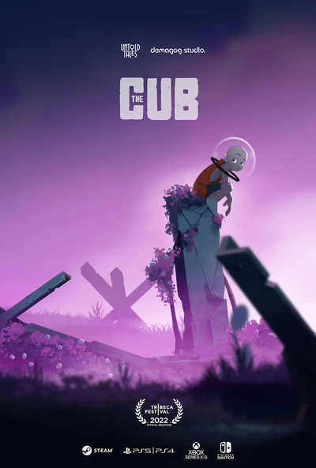
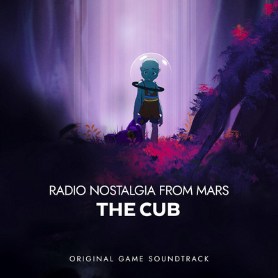

After the Great Climate Catastrophe the elites evacuated to Tesla City on Mars. The rest of us died. Years later, when a research mission revisits Earth, they spot a human-like mutant kid.
Upon discovering the cub, the science expedition turns into a safari-like hunt, and the kid runs through urban ruins covered by a mutant nature. It seems that the barbarian bastard has a plan.
While traversing the vibrant post-apocalyptic world, the cub wears a Martian helmet that airs Radio Nostalgia from Mars, his favorite radio station streaming music and Tesla City dwellers’ memories of their former home on Earth.
The soundtrack Radio Nostalgia from Mars: The Cub is available on all music platforms:
